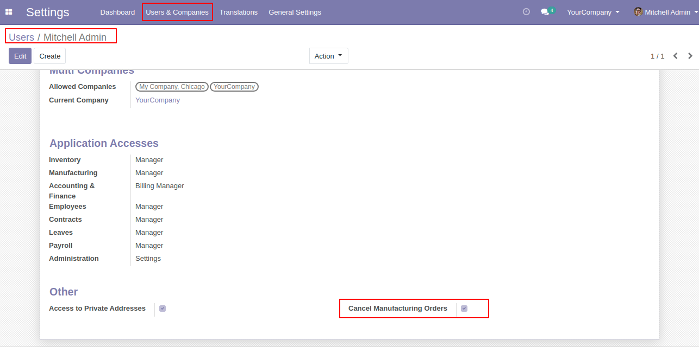
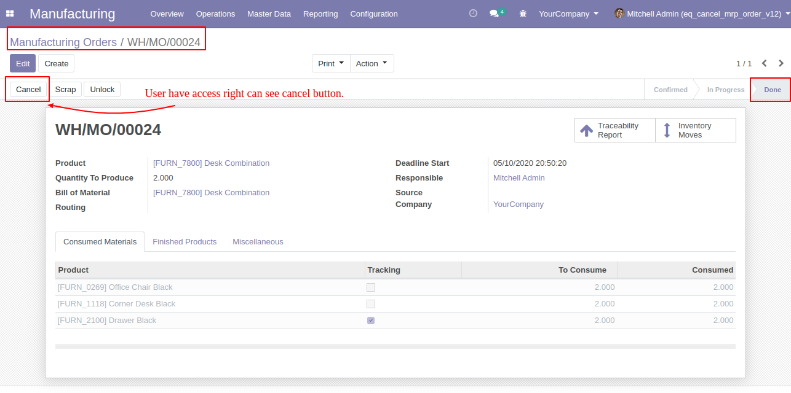
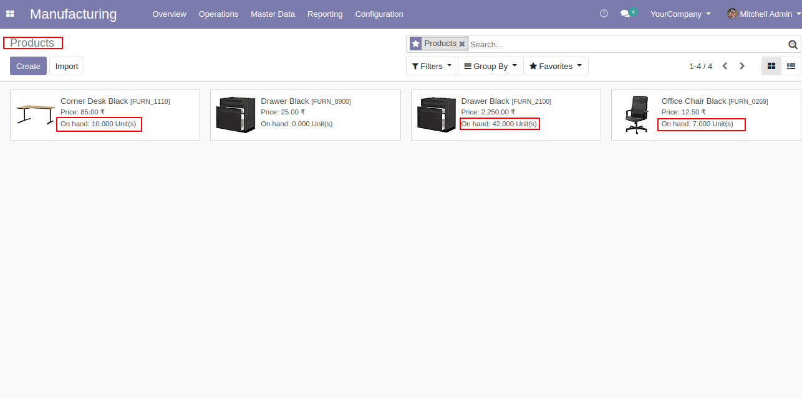
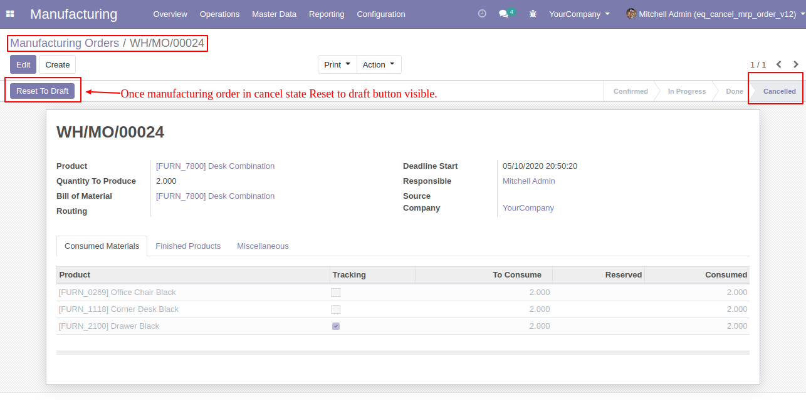
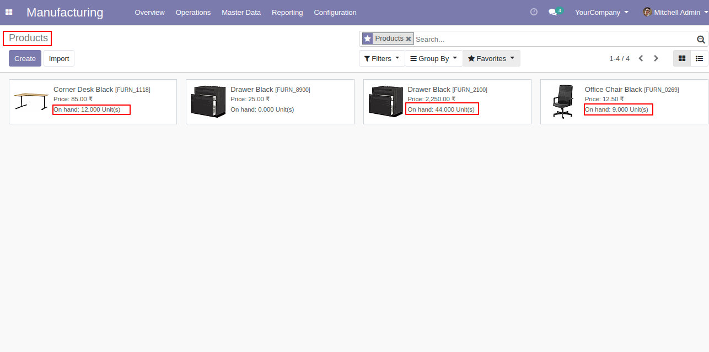
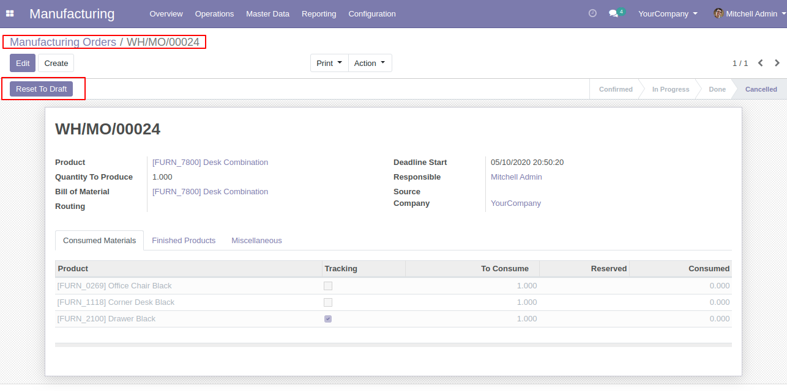
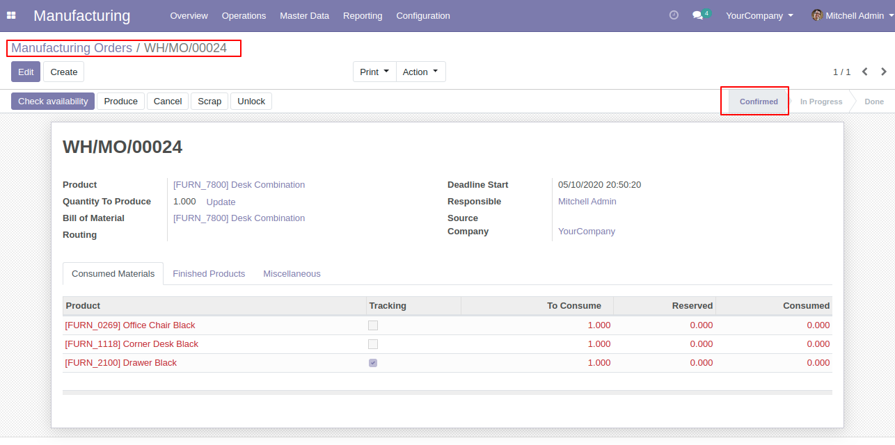

From Users Menu, there is access rights called "Cancel Manufacturing Orders". User who have access rights can cancel manufacturing orders.

Before process manufacturing order as per below image product have some quantity.
Once manufacturing order done inventory moves moved to done state.
User who have cancel manufacturing orders access rights can see "cancel" button.

After done manufacturing order consumed material quantity decreased.

When user click on cancel button it cancel inventory moves, cancel work orders and reverse inventory in system and moved manufacturing order to "Cancelled" state.
After cancel manufacturing order reset to draft button appeared.

After cancel manufacturing order consumed material quantity increased.

Click on reset to draft button it will delete cancelled inventory moves, delete cancelled finished workorders and make order in confirm state.


Contact us for Support, Customization, Implementation
You will get 45 Days free support in case of Bugs/Issue exclude data recovery.